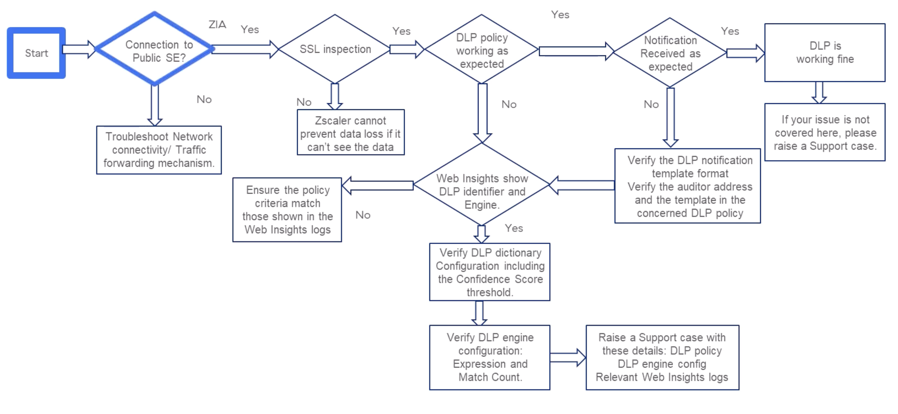

DLP misfires, dictionary tuning, and the multi-file upload trap
"DLP works when SSL inspection works — and stops at the first match per upload. Both are quiet rules that turn most DLP tickets into one-line answers."
💭THINK FIRST · WHAT DLP HAS TO SEE TO ACT
DLP can only act on bytes Zscaler can read. Encrypted bytes → SSL Inspection. POST/PUT bytes → the actual payload, not headers. And only the file types and policies the rule says to look at.
If SSL inspection is OFF for a category, what is the DLP service actually seeing?
Why is the difference between "the rule fired but didn't notify" and "the rule didn't fire" the most useful early branch?
Q1 — MODEL ANSWER
Nothing useful. Without SSL inspection, the DLP engine sees an opaque TLS stream — destination IP, SNI, perhaps file size, but no content. Dictionaries and engines have no payload to scan, so even a perfectly configured rule never matches. Step zero of every DLP troubleshoot is "SSL Inspected = Yes" in Web Insights.
Q2 — MODEL ANSWER
"Fired but didn't notify" sends you to the notification template, auditor address, and template assignment on the policy. "Didn't fire" sends you to dictionary/engine config, criteria match, and SSL Inspection. They are different paths through the troubleshooting flow and conflating them costs an hour.
SECTION 0
The Data Protection Troubleshooting Flow
Three DLP areas: AI Discovery & Classification, Secure Data in Motion, Secure Data at Rest. For inline DLP (data in motion), the chain is: traffic forwarded → SSL inspected → DLP policy evaluated → if matched, notification sent. Each branch in the flow points at a different config to check.

The canonical DLP troubleshooting tree. Branch one: SSL inspection on? Branch two: policy matched? Branch three: notification format correct? Each leaf points to a specific Web Insights column or config screen.
💡WEB INSIGHTS COLUMNS FOR DLP
For any DLP ticket, the must-have columns are: SSL Inspected, DLP Identifier, DLP Engine, Filename, URL, User, Location, Protocol, Request Method (POST/PUT). Filter Request Method to POST/PUT to see only uploads.
🧠
MENTAL NOTE
DLP rule never matches without SSL inspection — first check is always SSL Inspected = Yes. DLP Engine = None in Web Insights → diagnose the rule criteria. If everything matches but the user isn't notified → notification template, auditor address, template assignment.
ASK A QUESTION
ADD A NOTE
💭THINK FIRST · DLP POLICY NOT DETECTING CREDIT CARD DATA
A user uploads an Excel spreadsheet of credit card numbers. The DLP rule for Excel files is configured — but Web Insights shows DLP Engine = None. Three classes of cause: the payload, the rule, or the inspection.
What does "copy the same data into a text file and re-upload" actually test?
If the Match Count in the rule is 5 but the spreadsheet has 4 credit cards, what's the expected behaviour and why?
Q1 — MODEL ANSWER
It splits "is it a content problem?" from "is it a file-type problem?" If the same data triggers the rule when uploaded as text, then dictionaries and engines are fine; the spreadsheet was the issue (file-type criteria missing, format wrong, or DLP couldn't parse the file). If the text file also doesn't trigger, the problem is dictionary or engine configuration.
Q2 — MODEL ANSWER
No notification — the engine requires at least 5 matches before it fires. The rule is working as designed; the upload is below the threshold. Either lower the Match Count or upload a sample with ≥5 credit-card numbers to verify the rule.
USE CASE 1 · ZIA
DLP Policy Not Detecting Credit Card Data
Symptom: The DLP policy configured for Excel files is not detecting credit card data in a spreadsheet uploaded to a website.
1
PROBLEM
Excel spreadsheet upload contains credit-card numbers but the configured DLP rule does not fire.
2
LOCATE
Four cheap checks before deep config review:
Copy the same data into a text file and upload — does it trigger?
Verify the data format in the spreadsheet matches a credit-card format.
Reduce the Confidence Score Threshold in the Credit Card DLP Dictionary.
Investigate Web Insights for the upload transaction.
3
ISOLATE
Web Insights filter: Request Method = POST or PUT; filter by user or client IP. Check these columns:
URL — matches the rule's URL?
SSL Inspected = Yes (must be).
DLP Engine — if None, criteria don't match.
User, Location, Protocol all match rule criteria.
4
DIAGNOSE
If Web Insights criteria match the rule but DLP still didn't fire, inspect the DLP engine:
Verify the correct DLP Dictionary (or Dictionaries) is selected.
Verify expression logic — if wrong, build a new engine rather than mutating a predefined one used elsewhere.
Verify Match Count corresponds to the actual number of credit-card numbers in the data (often 5; if your sample has fewer it won't fire).
Double-check SSL Inspection is enabled for the upload traffic.
🧠
MENTAL NOTE
Cheap-first-checks for DLP misses: (1) text-file re-upload test; (2) format match; (3) lower Confidence Score Threshold; (4) Web Insights. Match Count default ~5 — fewer matches in the sample = no notification. Never mutate a predefined DLP engine; create a new one.
ASK A QUESTION
ADD A NOTE
💭THINK FIRST · WORKS ON WEBB, FAILS ON WEBA
Same file, same data, same DLP policy. Uploaded to WebA → no notification. Uploaded to WebB → notification fires. The dictionaries are clearly working. What's different about WebA?
If WebA and WebB share the same DLP rule but only WebB triggers, where would you look first — and why?
Why is taking an HTTP header trace on both uploads more informative than reviewing the rule one more time?
Q1 — MODEL ANSWER
SSL Inspection for the domains WebA actually uses. The most common cause is that WebA uploads to a sub-domain or CDN that isn't covered by the SSL inspection rule, so the upload bytes are encrypted and invisible to DLP. WebB happens to upload to a domain that is inspected. Same rule, different inspection coverage.
Q2 — MODEL ANSWER
Header traces show the actual destination host and Content-Type of each request. You'll see whether WebA POSTs to a different host than you assumed, or splits the upload into a multipart request that doesn't match the rule. That ground-truth often contradicts what the developer or admin "remembers" about how the site uploads.
USE CASE 2 · ZIA
Uploading Sensitive Data Doesn't Trigger DLP Rule on WebA
Symptom: Uploading sensitive data to web application WebA does not trigger the DLP rule, which does work when uploading the same data to WebB.
1
PROBLEM
Identical data + same rule + WebA = no DLP. Same upload to WebB = rule fires.
2
LOCATE
Good news — the policy works (proven by WebB). Two things to verify:
The data actually contains sensitive info per the configured dictionary/engine.
WebA and WebB are subject to the same DLP rule for the relevant context.
3
ISOLATE
Ensure the file type and other criteria in Web Insights match those in the DLP rule for WebA.
Ensure SSL Inspection is enabled for the domains WebA actually uses — an HTTP header trace will reveal them.
Take HTTP header traces while uploading the same file to WebA and WebB to compare.
4
DIAGNOSE
The most common cause: WebA's upload domain (or CDN) is not covered by the SSL Inspection rule. The bytes go through encrypted; DLP cannot inspect. Extend SSL inspection coverage to the WebA upload host(s) and the rule will fire.
⚠HEADER TRACES BEFORE POLICY EDITS
Before changing any DLP rule, take HTTP header traces of the working and non-working uploads. They reveal the actual domains, request methods, and Content-Type — which is almost always the root cause.
🧠
MENTAL NOTE
Works-on-WebB-but-not-WebA → almost always SSL Inspection coverage for the actual upload domain. Diagnose with HTTP header traces of both uploads (revealing real destination host + Content-Type). Then extend SSL Inspection to the WebA domain.
ASK A QUESTION
ADD A NOTE
💭THINK FIRST · MULTI-FILE UPLOAD & THE STOP-ON-FIRST-MATCH RULE
FileA and FileB both contain 5 SSNs. The DLP rule notifies on FileA — but FileB is silent. The instinct is to suspect FileB. The reality is in how DLP processes batched uploads.
Why does the DLP engine stop scanning after the first policy match in a single multipart upload?
How does reversing the upload order let you confirm the diagnosis in 30 seconds?
Q1 — MODEL ANSWER
DLP processes each file in a single multipart upload in browser order, and once the first file matches the policy, the engine stops processing — by design. Subsequent files in the same request are not scanned. So the second file in any batched upload is invisible to DLP regardless of its content.
Q2 — MODEL ANSWER
Re-upload with FileB first instead of FileA. If FileB now triggers and FileA is silent, you've proven the "stop on first match" behaviour rather than any difference between the files. You can also rename the files to verify it's purely about position in the request.
USE CASE 3 · ZIA
DLP Rule Sends Notification for Only One File
Symptom: When uploading FileA and FileB, each containing 5 SSNs, the DLP rule sends a notification only for FileA.
1
PROBLEM
Two files, identical risk, same upload — only one triggers DLP.
2
LOCATE
Surface checks first:
Verify FileB's file type is also a criterion in the DLP policy (if FileA & FileB differ).
Verify the notification template and settings are correct.
3
ISOLATE
If both files should have been flagged per policy config, isolate the session:
Inspect the Filename field in Web Insights for both transactions.
Confirm the DLP Identifier in Web Insights matches the one in the notification email.
Capture HTTP headers for both file uploads.
4
DIAGNOSE
When a user uploads multiple files in one session, the DLP engine processes each file in the order the browser sends them. The engine stops processing after the first policy match. So if FileA fires first, FileB is never scanned.
Confirm by checking the POST request in the HTTP header trace — both files appear in the same request with Content-Type: multipart. Reverse the upload order; you'll get a notification for FileB only. Renaming files can also reverse the order if the site sorts alphabetically.
💡30-SECOND CONFIRMATION TEST
Reverse the file upload order (or rename the files to swap alphabetical order). If the "missed" file now fires and the "caught" one goes silent, it's the stop-on-first-match behaviour — not a rule misconfiguration.
🧠
MENTAL NOTE
Multi-file upload in one HTTP request → DLP engine processes in browser order and stops at first policy match. Confirm via Content-Type: multipart in the POST. Workaround for testing: reverse the upload order; renaming files can also reverse it.